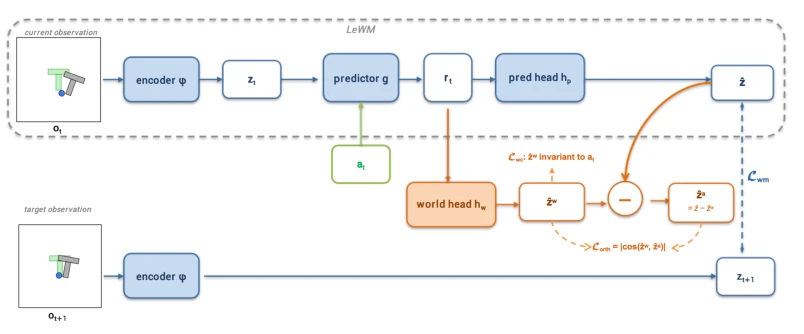
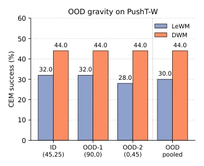

DWM: Separating World Effects from Actions in Latent World Models
Yi-Ge Zhang, Tianqi Du, Qi Zhang, Yisen Wang abspdf
论文点评Review
这篇论文终于有人敢把“重力”从“推箱子”里分出来了。传统 latent world model 就像个糊涂账，把 agent 的主动操作和环境自发的漂移混在一起预测，遇到重力、惯性这种“不管你怎么动它都动”的情况就崩。DWM 这招挺聪明，训练时多开一个“世界头”专门负责那些跟动作无关的惯性，推理时又切回单头，既没增加部署成本，又解决了物理一致性幻觉。不过，这方法本质上还是靠 loss 硬掰，如果世界效应太复杂（比如流体），光靠正交约束够吗？另外，W-variant 的构造有点“为了实验而实验”，真实机器人场景里这种恒定漂移可不多见。但无论如何，给 latent space 做减法（解耦）是个好方向，至少比盲目堆参数强。
Figure 1: World/action entanglement on PushT-W. In every panel, the gray T is the current block, the green T is the goal pose, and the blue circle is the pusher (i.e., the end-effector controlled by the agent). The arrow labelled g in the top-left of each panel indicates the direction of the persistent gravity that defines the PushT-W world effect: the block keeps sliding along g even when the pusher is idle. Top: zero-action rollout in which the pusher is held still, isolating the action-invariant world effect—the gray T slides along g toward the lower-right without any push. Middle: on the same episode, the single-head LeWM baseline fuses the action-driven and the action-invariant components into a single next-latent target and fails to reproduce the sliding motion: its predicted block t
方法Method
DWM 框架在保持原有 backbone（Encoder phi, Predictor g）不变的前提下，通过训练时的辅助分支实现解耦。整体 Pipeline 分为训练与推理两阶段：推理时仅使用原有的 pred head hp 输出 z_hat，保证部署兼容性；训练时增加一个并行的 world head hw。核心创新在于两个辅助 Loss：1) World-Contrastive Loss (L_wc)：利用 InfoNCE 目标，对同一状态的不同动作扰动（at vs a_tilde）进行对比，强制 hw 的输出 z_w 对动作不变，仅捕捉环境自演化部分；2) Orthogonality Constraint (L_orth)：计算 z_w 与残差动作分量 z_a = z_hat - z_w 的余弦相似度，强制两者正交，确保动作信息不被 hw 吸收。最终总 Loss 为 L = L_WM + lambda_wc*L_wc + lambda_orth*L_orth。这种设计将显式加法分解 z_hat = z_w + z_a 引入监督信号，使模型学会区分“世界想怎么动”和“我想怎么动”，而无需修改底层架构。
—

Figure 2: DWM architecture. The upper lane, enclosed by the dashed grey box, is the unchanged LeWM baseline: the current observation ot is encoded by φ into zt, the action at is injected through the predictor g to produce the rollout state rt, and the pred head hp reads rt to produce the predicted next latent ˆz := hp(rt) (this is exactly the ˆzt+1 of Section 3.1; the subscript is dropped for brevity). The lower lane encodes the next observation ot+1 with the same encoder φ to produce the target zt+1, which supervises ˆz through the world-model loss Lwm. Our addition is a single training-time branch (orange): a world head hw is attached in parallel to the same rt (the first representation in which the action at, injected by g, has already been fused with world context), producing ˆz w :=hw
Figure 3: CEM planning success rate on our benchmark suite. Left: Main results on the three W-variant tasks (with a persistent action-invariant world effect), averaged over 3 CEM planner seeds (n=50 start–goal pairs per seed); error bars denote across-seed standard deviation. Right: Performance on the flat counterparts (tasks without world effect), reported under the same training recipe and CEM evaluation. In both panels we compare the single-projection LeWM baseline against our world/action-decomposed model. Numbers above each bar are mean success rates in percent.

Figure 4: OOD gravity CEM planning suc- cess on PushT-W (n=50 pairs per gravity); OOD-pooled combines the two OOD grav- ities.